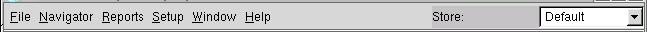
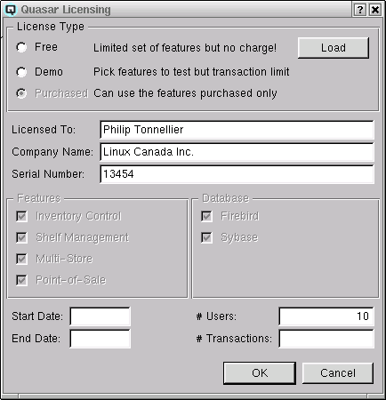
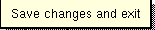

While the contents of the menu bar vary slightly between different
types of windows, the commands, when available, carry out the same
basic functions.
File

When "File" is selected from the main window the drop down menu
contains:
- New Company
- Create a new company database.
- Open Company
- Open an existing company database.
- Close Company
- Close the open company.
- Users
- Create a new user, delete a user, edit a user or
set the password of an existing user.
- Companies
- View and delete a company.
- Configuration
- Set and view the Quasar configuration.
- Backup
- Backup the company data.
- Restore
- Restore the company data.
- Run SQL Script
- Manipulate data using an SQL script.
- Import Data
- Import data from an xml file.
- Exit
- Exits Quasar closing all open windows.
When "File" is selected from a transaction window or master window
the drop down menu may contain some or all of
the following commands:
- Ok
- Saves the current record while leaving the window.
- Next
- Saves the current record and prepares the window for the
entry of a new record.
- Cancel
- Cancels the current entry and closes the window.
- Delete
- Deletes he current record.
- Clone
- Clones the record to a new record saving data entry time.
- Recurring
- Displays the "Recurring Transaction" screen in order to define the frequency and posting information of a transaction to recur.
- Close
- Closes the window without saving the current record.
- Exit
- Exits Quasar closing all open windows.
Navigator
The "Navigator" drop down menu provides a very fast way of
navigating anywhere in the application.
Reports
The "Reports" drop down menu provides fast access to reports.
Setup
The "Setup" drop down menu provides access to specific setup
windows such as system parameters, inventory parameters,
point-of-sale parameters and handheld parameters.
Windows
The "Windows" drop down menu provides the capability of closing all
open Quasar windows without closing exiting the application.
Help
When "Help" is selected the drop down menu will contain the
following commands:
- Help
- Opens the Quasar online help window.
- License
- Opens the Quasar Licensing window. This window displays
the current license parameters and allows you to evaluate the various
Quasar modules. To evaluate Quasar select "Demo" and click on the
features you wish to test. In demo mode you will be limited to a
maximum of 50 transactions. If you decide you do not want to purchase
any of the add-on modules you can choose to go back to using the free
license by selecting "Free". To load a new license click on the "Load" button.

- Whats This
- Allows the user to view the usage of some window
attributes and commands. Here is an example using "Ok".

- About Quasar
- Displays information about Quasar.
- About Qt
- Displays information about Qt.